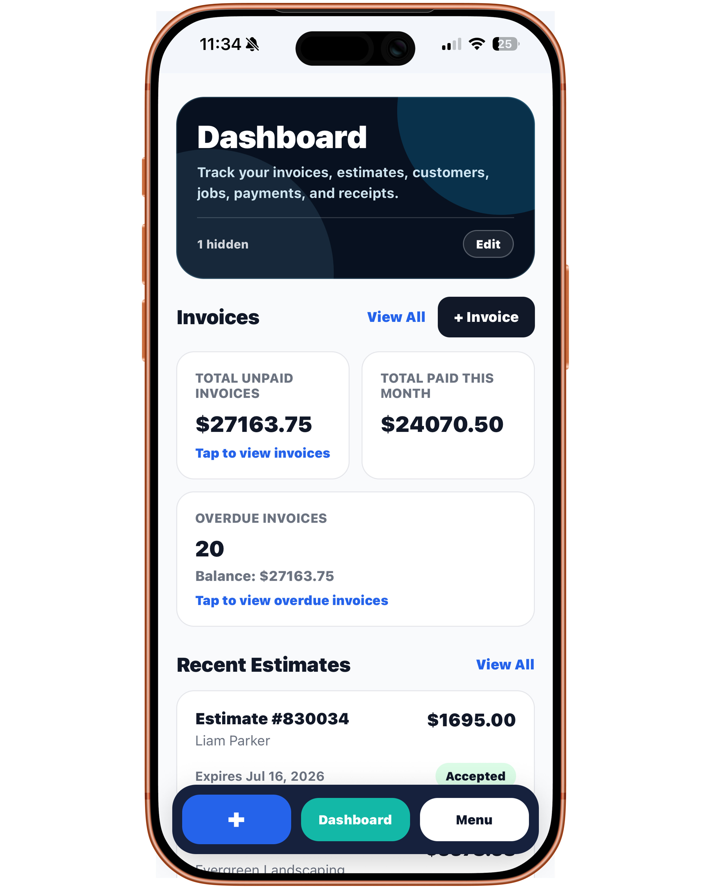
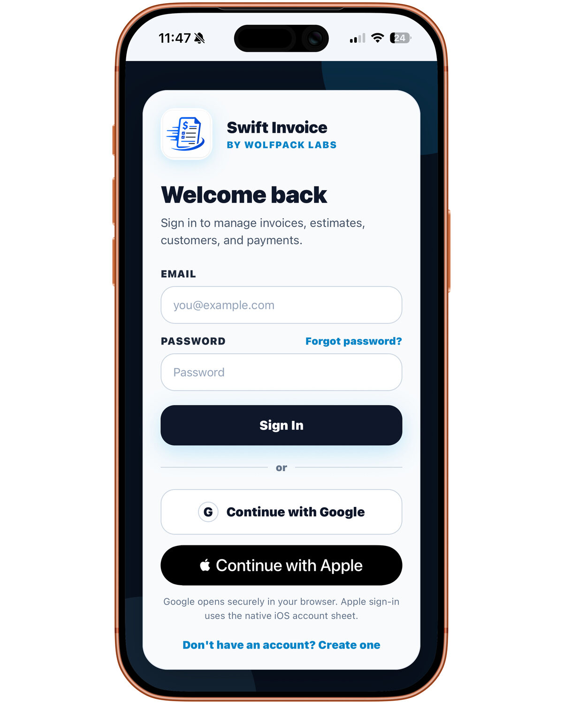
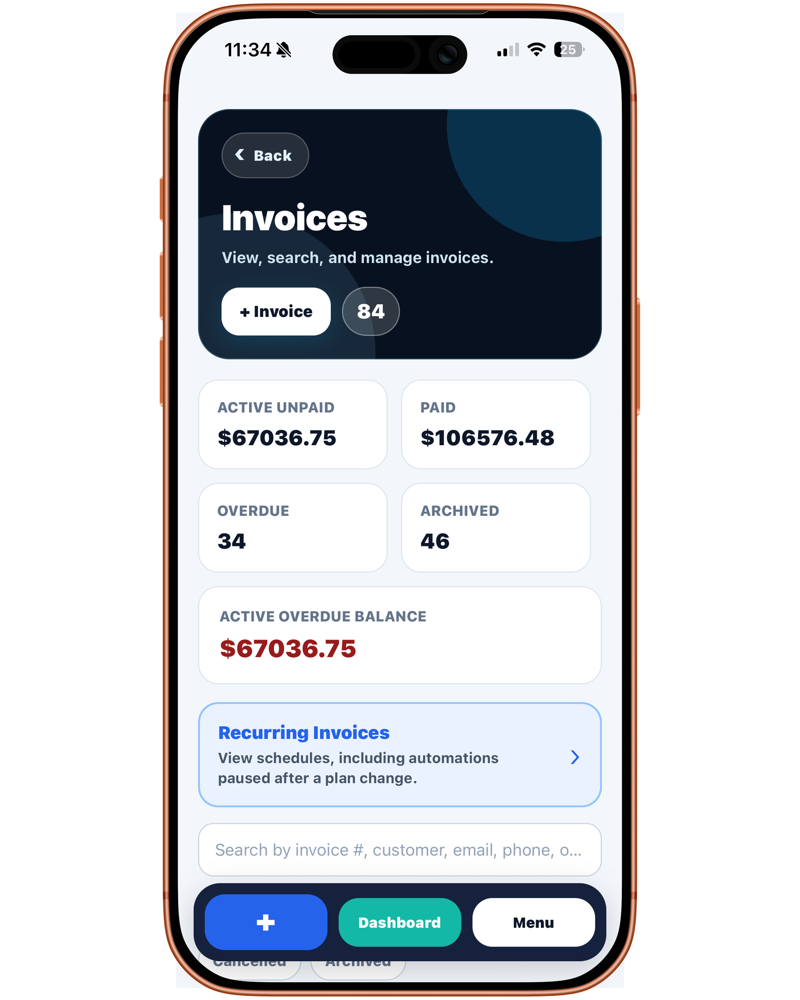
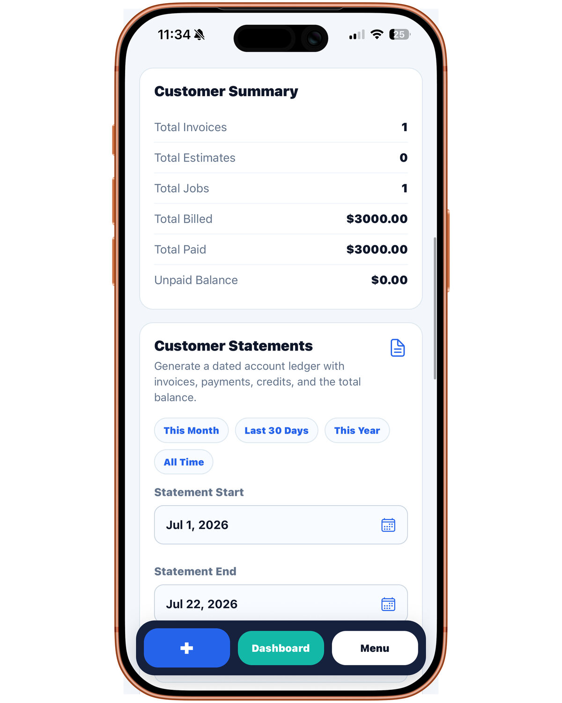
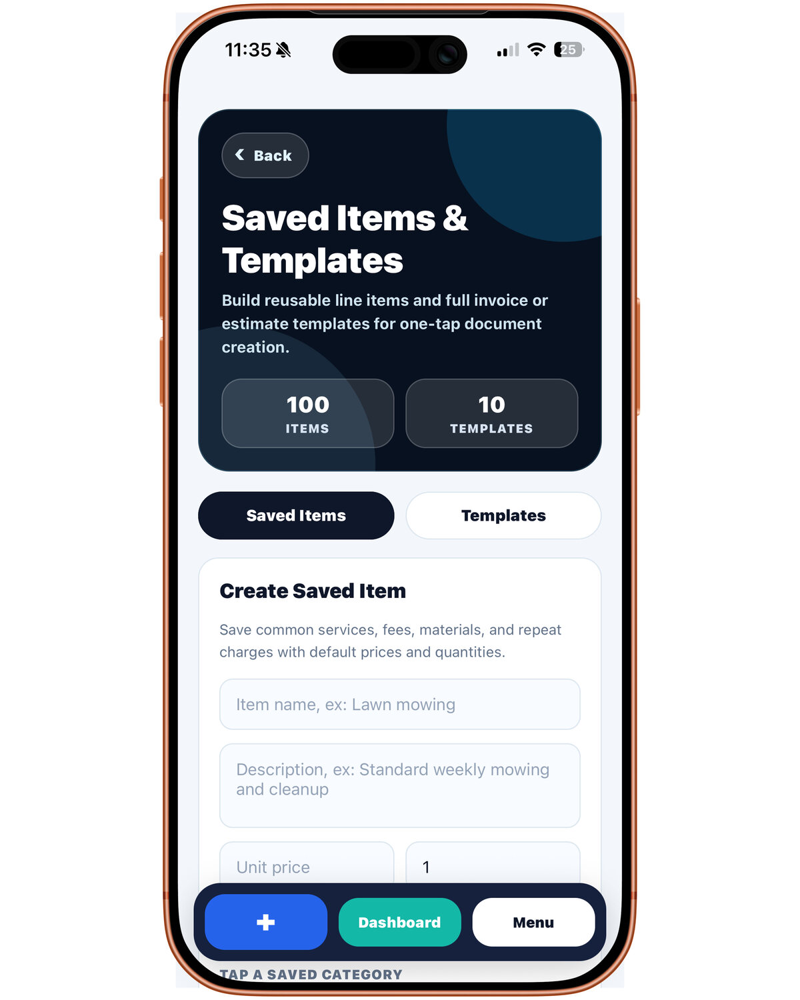
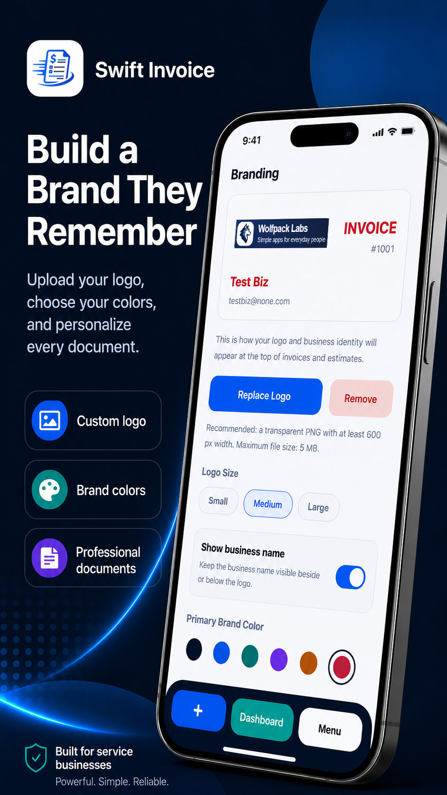

Add the customer
Save the contact and business details needed for estimates, invoices, and follow-up.
WP Labs: Invoice brings estimates, invoices, customers, payments, and job documentation into one focused mobile workflow for contractors, freelancers, consultants, and other self-employed professionals.

Keep the information behind the work connected instead of rebuilding it across notes, messages, spreadsheets, and separate finance tools.
Save the contact and business details needed for estimates, invoices, and follow-up.
List services, labor, materials, quantities, rates, notes, and expected totals.
Keep job photos and useful context connected to the customer and document.
Review the final invoice, share it with the customer, and follow payment status.
These compact previews match the homepage gallery width while preserving each image’s original proportions.




Contractors and freelancers may deliver different services, but both need a clear path from scope and customer details to a professional invoice.
Useful for handymen, painters, installers, cleaners, landscapers, mobile service providers, and owner-operators who quote jobs and bill customers directly.
Useful for designers, photographers, writers, consultants, specialists, and solo service businesses that bill by project, milestone, service, or retainer.
Field-service work often starts with a site visit or customer request, not an invoice. WP Labs: Invoice keeps the estimate, job documentation, customer information, and final bill in the same workflow.


Freelancers need clear documents that communicate scope, pricing, and payment expectations. WP Labs: Invoice is designed to keep that client-facing workflow polished and easy to review.
Create customer-ready documents with line items, quantities, rates, notes, taxes, discounts, totals, and payment terms.
Keep customer information organized and reuse common services, products, descriptions, and pricing.
Add useful visual context and keep invoice payment status connected to the correct customer record.
Yes. WP Labs: Invoice supports estimate workflows before the final invoice so labor, materials, notes, and customer details can stay organized from quote to payment.
Yes. Business branding and saved items help freelancers create consistent documents without retyping the same services, rates, products, and descriptions.
WP Labs: Invoice is designed to keep job photos and supporting context connected to relevant customer documents.
An estimate communicates expected work and pricing before the final amount is due. An invoice requests payment for completed work or an agreed billing milestone. Read the invoice versus estimate guide for more detail.
The public release is planned for Fall 2026. Join the update list for App Store and launch announcements.
Join the WP Labs: Invoice update list for launch and App Store availability announcements.